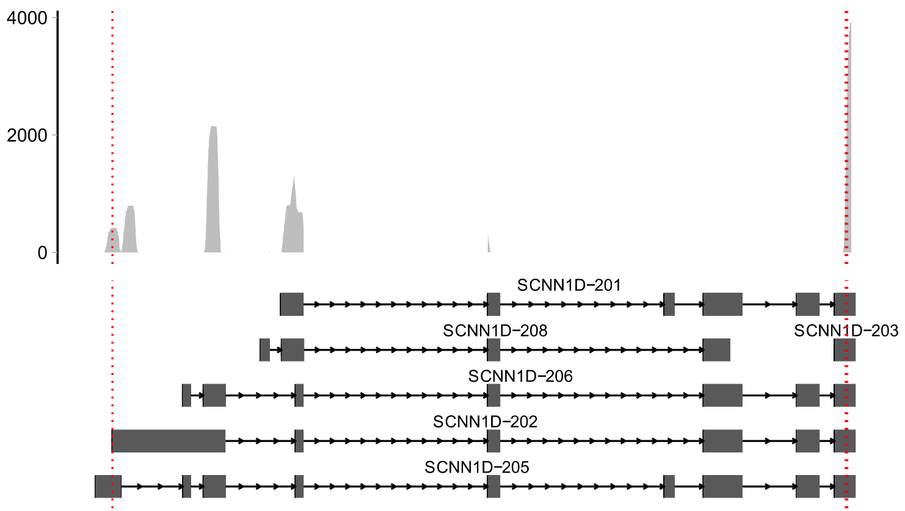

Usage
scATS can analyze both single-end and paired-end 5’-end scRNA-seq data, enabling direct quantification using Seurat objects, while incorporating RNA degradation (RD) modeling through expectation-maximization (EM).
The main functions of scATS are: TSSCDF, FindMarkersByTheta,FindMarkers, ThetaByGroup,psi, Sashimi
TSS inference and quantification
The input files include:
Seurat object (R object)
Alignment file (bam file)
Annotation file (gtf file)
# load packages
suppressMessages({
library(scATS)
library(Seurat)
library(data.table)
})
# load input files
seu <- readRDS("demo/demo_seurat.Rds")
Genes <- rownames(seu)
gtfFile <- file.path("demo/demo.gtf")
bams <- "demo/demo.bam"
file.exists(bams)
# quantification using wrapper function
scats <- TSSCDF(object = seu, bam = bams, gtf = gtfFile, genes = Genes, verbose = TRUE, scDR = TRUE, UTROnly = TRUE)
scats
class: scATSDataSet
dim: 6 2000
metadata(2): version parameters
assays(4): counts psi theta alpha
rownames(6): OR4F5@1:69071:+ OR4F5@1:69090:+ ... SCNN1D@1:1287217:+ SCNN1D@1:1287223:+
rowData names(12): TSS gene_id ... alpha theta
colnames(2000): TGGACGCTCCTTCAAT-1 CGAGCACGTCAGAATA-1 ... ATCGAGTAGCGGCTTC-1 CTAGAGTAGTGCCATT-1
colData names(4): orig.ident nCount_RNA nFeature_RNA CellType
The quantification results are stored in scats@rowRanges and contain the following columns:
column name |
content |
|---|---|
seqnames |
The chromosomal name of the gene to which TSS belongs. |
ranges |
The genomic locus of TSS, where the growth rate is highest. |
strand |
The genomic strand of the gene to which TSS belongs. |
gene_id |
The Ensembl ID of the gene to which TSS belongs. |
gene_name |
The HGNC Symbol of the gene to which TSS belongs. |
TSS |
The ID of the TSS in the format of [seqnames:ranges:strand]. |
Region |
The growth area of the sorted 5’-starts of read 1, or it can also be interpreted as the |
PSI |
The percent spliced in (PSI) of TSS. |
Percent |
The ratio of TSS reads. |
Annotated |
The nearest annotated TSS locus that exists in the region, if it is NA, |
Greedy |
Greedy for the first TSS. If it is TRUE, it indicates that the first TSS is quantified |
beta |
The area under the cumulative distribution curve : close to 1, indicates no degradation, |
alpha |
The degradation index fitted using the EM algorithm: the larger the value, the more severe the degradation. |
theta |
The PSI value fitted using the EM algorithm. |
AllReads |
The total number of reads used for quantification. |
Note : All the following analyses are based on the scats object.
Finding differentially expressed ATSs
Finding markers of all group
Identifying ATS markers based on θ value.
DE <- scATS::FindMarkersByTheta(object = scats, groupBy = "CellType", group1 = NULL, group2 = NULL, cores = 20)
DE
gene TSS group1 theta1 theta2 cell1 cell2 percent1 percent2 p
<char> <char> <char> <num> <num> <int> <int> <num> <num> <num>
1: OR4F5 OR4F5@1:69063:+ A 0.3090495 0.2476250 14 9 1.3725490 0.9183673 0.2824086
2: OR4F5 OR4F5@1:69063:+ B 0.2476250 0.3090495 9 14 0.9183673 1.3725490 0.2824086
3: OR4F5 OR4F5@1:69071:+ A 0.2092985 0.3593406 12 17 1.1764706 1.7346939 0.1862959
4: OR4F5 OR4F5@1:69071:+ B 0.3593406 0.2092985 17 12 1.7346939 1.1764706 0.1862959
5: OR4F5 OR4F5@1:69080:+ A 0.1622722 0.1533179 9 9 0.8823529 0.9183673 0.9162350
6: OR4F5 OR4F5@1:69080:+ B 0.1533179 0.1622722 9 9 0.9183673 0.8823529 0.9162350
The DE object contains following columns:
column name |
content |
|---|---|
gene |
The HGNC Symbol of the gene to which TSS belongs. |
TSS |
The ID of the TSS in the format of [gene_name:seqnames:ranges:strand]. |
group1 |
The levels of group. |
theta1/2 |
The theta value of the TSS in the group. |
cell1/2 |
The number of cell-type corresponding to group. |
percent1/2 |
The ratio of TSS reads. |
p |
The p-value from the Wilcoxon test for differences in psi values among groups. |
Identifying ATS markers based on ψ value.
DE <- scATS::FindMarkers(object = scats, groupBy = "CellType", group1 = NULL, group2 = NULL, cores = 20, majorOnly = F)
DE
TSS G1 G2 n1 n2 N1 N2 Cells1 Cells2 PSI1 PSI2 PseudobulkPSI1
<char> <char> <char> <int> <int> <int> <int> <int> <int> <num> <num> <num>
1: OR4F5@1:69071:+ A Other 66 58 226 207 1020 980 0.2306640 0.2385772 0.2010582
2: OR4F5@1:69071:+ B Other 58 66 207 226 980 1020 0.2385772 0.2306640 0.3260394
PseudobulkPSI2 wald.test wilcox.test prop.test
<num> <num> <num> <num>
1: 0.3260394 0.9230017 0.9005852 1.279065e-09
2: 0.2010582 0.9230017 0.9005852 1.279065e-09
The DE object contains following columns:
column name |
content |
|---|---|
TSS |
The ID of the TSS in the format of [gene_name:seqnames:ranges:strand]. |
G1/2 |
The levels of group. |
n1/2 |
The expression number of the TSS in the G1/2. |
N1/2 |
The expression number of the host gene in the G1/2. |
Cells1/2 |
The number of cell-type corresponding to G1/2. |
PSI1/2 |
The average sum of all individual cell PSIs. |
PseudobulkPSI1/2 |
The PSI value calculated by combining all reads and treating them as a pseudobulk sample. |
wald.test |
The p-value from the Wald test for differences in psi values among groups. |
wilcox.test |
The p-value from the Wilcoxon test for differences in psi values among groups. |
prop.test |
The p-value from the Proportion test for differences in psi values among groups. |
Finding markers of given group
### based on θ value
DE <- scATS::FindMarkersByTheta(object = scats, groupBy = "CellType",group1 = "A", group2 = "B", cores = 20)
### based on ψ value
DE <- scATS::FindMarkers(object = scats, groupBy = "CellType", group1 = "A", group2 = "B", cores = 20, majorOnly = F,gene = "OR4F5")
In addition, you can specify the host genes used in the calculation by setting the gene parameter.
Calculating PSI
Calculating PSI based on θ value.
theta <- scATS::ThetaByGroup(object = scats, gene = "OR4F5",groupBy = "CellType")
theta
Group TSS alpha theta
<char> <char> <num> <num>
1: A 1:69090:+ 0.3766315 0.4308618
2: A 1:69071:+ 0.9681916 0.5691382
3: B 1:69090:+ 0.2349261 0.1561318
4: B 1:69071:+ 0.6822974 0.8438682
Calculating PSI based on ψ value.
psi <- scATS::psi(object = scats, groupBy = "CellType", TSS=c("OR4F5@1:69071:+", "OR4F5@1:69090:+"))
psi
TSS groupBy Cells N n mean sd se ci median Q1 Q3 mad iqr
1 OR4F5@1:69071:+ A 1020 105 66 0.5813757 0.4859188 0.04742081 0.09403726 1 0 1 0 1
2 OR4F5@1:69071:+ B 980 96 58 0.5856689 0.4889869 0.04990702 0.09907795 1 0 1 0 1
3 OR4F5@1:69090:+ A 1020 105 46 0.4186243 0.4859188 0.04742081 0.09403726 0 0 1 0 1
4 OR4F5@1:69090:+ B 980 96 42 0.4143311 0.4889869 0.04990702 0.09907795 0 0 1 0 1
PseudobulkPSI
1 0.4935065
2 0.6436285
3 0.5064935
4 0.3563715
The theta or psi object contains following columns:
column name |
content |
|---|---|
Group/groupBy |
The level of group. |
TSS |
The ID of the TSS in the format of [gene_name:seqnames:ranges:strand]. |
alpha |
The degradation index fitted using the EM algorithm. |
Cells |
The number of cell-type corresponding to a given groups (The same applies to the following.). |
N |
The expression of the host gene. |
n |
The expression of the TSS. |
mean |
The mean of PSI. |
sd |
The standard deviation (std) of PSI. |
se |
The standard error (SE) of PSI. |
ci |
The confidence interval (CI) of PSI. |
median |
The median of PSI. |
Q1 |
The first quartile (Q1) of PSI. |
Q3 |
The third quartile (Q3) of PSI. |
mad |
The median absolute deviation (MAD) of PSI. |
iqr |
The interquartile range (IQR) of PSI. |
theta/PseudobulkPSI |
The PSI value calculated by combining all reads and treating them as a pseudobulk sample. |
Sashimi plots
# Take SCNN1D gene as an example
gene_symbol <- "SCNN1D"
tss <- GenomicRanges::start(scats@rowRanges[scats@rowRanges$gene_name==gene_symbol])
scATS::Sashimi(object = scats,
bam = bams,
xlimit = c(1280352, 1287325),
gtf = gtfFile,
gene = gene_symbol,
TSS = tss, # TSS位点
free_y = T,#是否scale
base_size = 12, #read部分字体大小
rel_height=0.9, #注释/read ，小于1 read部分比例更大
fill.color = "grey",
line.color = "red",
line.type = 3) -> p
p

sessionInfo()
R version 4.5.2 (2025-10-31)
Platform: x86_64-pc-linux-gnu
Running under: Ubuntu 22.04.5 LTS
Matrix products: default
BLAS: /usr/lib/x86_64-linux-gnu/blas/libblas.so.3.10.0
LAPACK: /usr/lib/x86_64-linux-gnu/lapack/liblapack.so.3.10.0 LAPACK version 3.10.0
locale:
[1] LC_CTYPE=en_US.UTF-8 LC_NUMERIC=C
[3] LC_TIME=zh_CN.UTF-8 LC_COLLATE=en_US.UTF-8
[5] LC_MONETARY=zh_CN.UTF-8 LC_MESSAGES=en_US.UTF-8
[7] LC_PAPER=zh_CN.UTF-8 LC_NAME=C
[9] LC_ADDRESS=C LC_TELEPHONE=C
[11] LC_MEASUREMENT=zh_CN.UTF-8 LC_IDENTIFICATION=C
time zone: Asia/Shanghai
tzcode source: system (glibc)
attached base packages:
[1] stats graphics grDevices utils datasets methods base
other attached packages:
[1] scATS_0.5.6
loaded via a namespace (and not attached):
[1] RcppAnnoy_0.0.22 splines_4.5.2
[3] later_1.4.4 BiocIO_1.20.0
[5] filelock_1.0.3 bitops_1.0-9
[7] tibble_3.3.0 R.oo_1.27.1
[9] polyclip_1.10-7 graph_1.88.1
[11] rpart_4.1.24 XML_3.99-0.20
[13] fastDummies_1.7.5 httr2_1.2.2
[15] lifecycle_1.0.4 OrganismDbi_1.52.0
[17] ensembldb_2.34.0 globals_0.18.0
[19] lattice_0.22-5 MASS_7.3-65
[21] backports_1.5.0 magrittr_2.0.4
[23] rmarkdown_2.30 Hmisc_5.2-4
[25] plotly_4.11.0 yaml_2.3.12
[27] httpuv_1.6.16 otel_0.2.0
[29] Seurat_5.3.1 sctransform_0.4.2
[31] spam_2.11-1 sp_2.2-0
[33] spatstat.sparse_3.1-0 reticulate_1.44.1
[35] ggbio_1.58.0 cowplot_1.2.0
[37] pbapply_1.7-4 DBI_1.2.3
[39] RColorBrewer_1.1-3 abind_1.4-8
[41] Rtsne_0.17 GenomicRanges_1.62.1
[43] mixtools_2.0.0.1 purrr_1.2.0
[45] R.utils_2.13.0 AnnotationFilter_1.34.0
[47] biovizBase_1.58.0 BiocGenerics_0.56.0
[49] RCurl_1.98-1.17 nnet_7.3-20
[51] rappdirs_0.3.3 VariantAnnotation_1.56.0
[53] IRanges_2.44.0 S4Vectors_0.48.0
[55] ggrepel_0.9.6 irlba_2.3.5.1
[57] listenv_0.10.0 spatstat.utils_3.2-0
[59] goftest_1.2-3 RSpectra_0.16-2
[61] spatstat.random_3.4-3 fitdistrplus_1.2-4
[63] parallelly_1.46.0 codetools_0.2-19
[65] DelayedArray_0.36.0 tidyselect_1.2.1
[67] UCSC.utils_1.6.1 farver_2.1.2
[69] BiocFileCache_3.0.0 matrixStats_1.5.0
[71] stats4_4.5.2 base64enc_0.1-3
[73] spatstat.explore_3.6-0 Seqinfo_1.0.0
[75] GenomicAlignments_1.46.0 jsonlite_2.0.0
[77] progressr_0.18.0 Formula_1.2-5
[79] ggridges_0.5.7 survival_3.8-3
[81] progress_1.2.3 segmented_2.1-4
[83] tools_4.5.2 ica_1.0-3
[85] Rcpp_1.1.0 glue_1.8.0
[87] gridExtra_2.3 SparseArray_1.10.8
[89] xfun_0.55 MatrixGenerics_1.22.0
[91] GenomeInfoDb_1.46.2 dplyr_1.1.4
[93] BiocManager_1.30.27 fastmap_1.2.0
[95] digest_0.6.39 R6_2.6.1
[97] mime_0.13 colorspace_2.1-2
[99] scattermore_1.2 tensor_1.5.1
[101] biomaRt_2.66.0 dichromat_2.0-0.1
[103] spatstat.data_3.1-9 RSQLite_2.4.5
[105] cigarillo_1.0.0 R.methodsS3_1.8.2
[107] tidyr_1.3.2 generics_0.1.4
[109] data.table_1.17.8 rtracklayer_1.70.0
[111] prettyunits_1.2.0 httr_1.4.7
[113] htmlwidgets_1.6.4 S4Arrays_1.10.1
[115] uwot_0.2.4 pkgconfig_2.0.3
[117] gtable_0.3.6 blob_1.2.4
[119] lmtest_0.9-40 S7_0.2.1
[121] XVector_0.50.0 htmltools_0.5.9
[123] dotCall64_1.2 RBGL_1.86.0
[125] ProtGenerics_1.42.0 SeuratObject_5.3.0
[127] scales_1.4.0 Biobase_2.70.0
[129] png_0.1-8 spatstat.univar_3.1-5
[131] rstudioapi_0.17.1 knitr_1.51
[133] reshape2_1.4.5 rjson_0.2.23
[135] checkmate_2.3.3 nlme_3.1-168
[137] curl_7.0.0 cachem_1.1.0
[139] zoo_1.8-15 stringr_1.6.0
[141] KernSmooth_2.23-26 parallel_4.5.2
[143] miniUI_0.1.2 foreign_0.8-90
[145] AnnotationDbi_1.72.0 restfulr_0.0.16
[147] pillar_1.11.1 grid_4.5.2
[149] vctrs_0.6.5 RANN_2.6.2
[151] VGAM_1.1-14 promises_1.5.0
[153] dbplyr_2.5.1 xtable_1.8-4
[155] cluster_2.1.8.1 htmlTable_2.4.3
[157] evaluate_1.0.5 GenomicFeatures_1.62.0
[159] cli_3.6.5 compiler_4.5.2
[161] Rsamtools_2.26.0 rlang_1.1.6
[163] crayon_1.5.3 future.apply_1.20.1
[165] mclust_6.1.2 plyr_1.8.9
[167] stringi_1.8.7 viridisLite_0.4.2
[169] deldir_2.0-4 BiocParallel_1.44.0
[171] txdbmaker_1.6.0 Biostrings_2.78.0
[173] lazyeval_0.2.2 spatstat.geom_3.6-1
[175] Matrix_1.7-4 BSgenome_1.78.0
[177] RcppHNSW_0.6.0 hms_1.1.4
[179] patchwork_1.3.2 bit64_4.6.0-1
[181] future_1.68.0 ggplot2_4.0.1
[183] KEGGREST_1.50.0 shiny_1.12.1
[185] SummarizedExperiment_1.40.0 kernlab_0.9-33
[187] ROCR_1.0-11 igraph_2.2.1
[189] memoise_2.0.1 bit_4.6.0